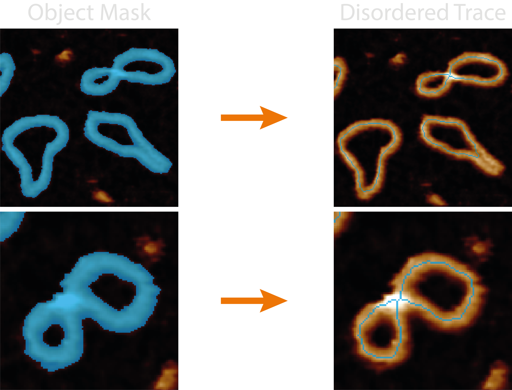
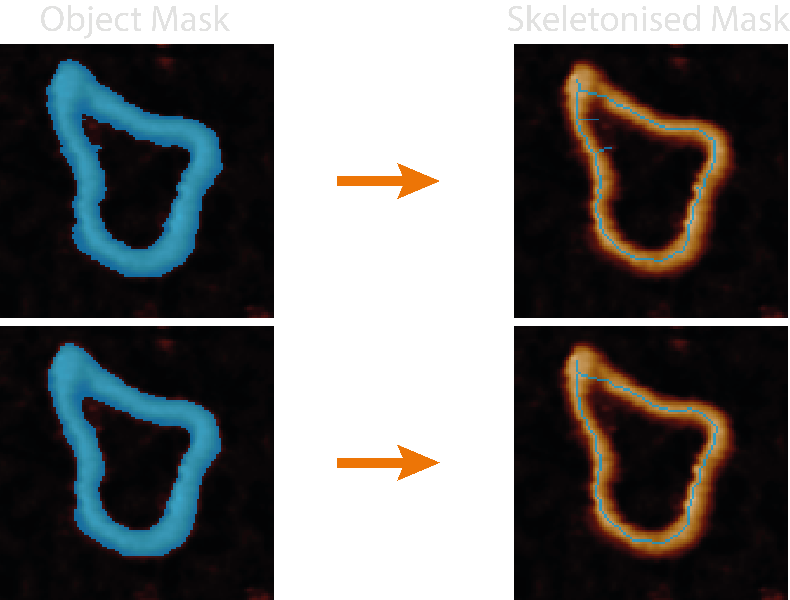
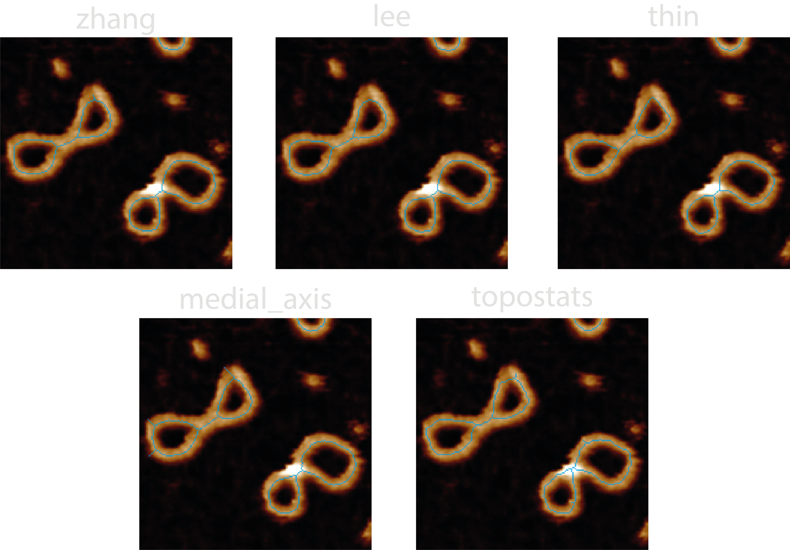
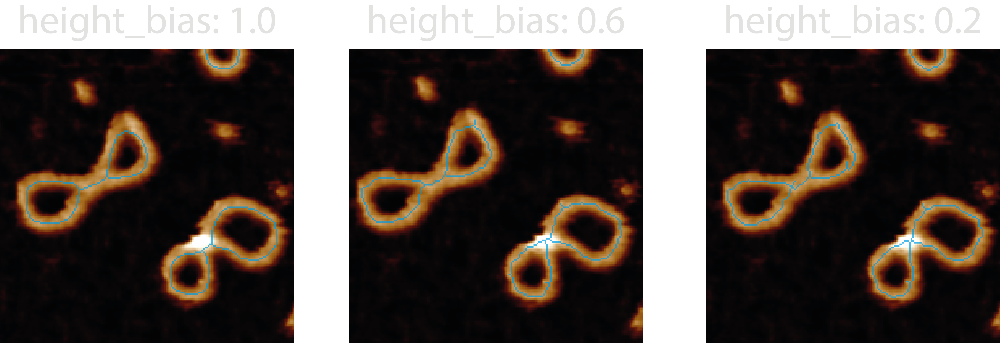
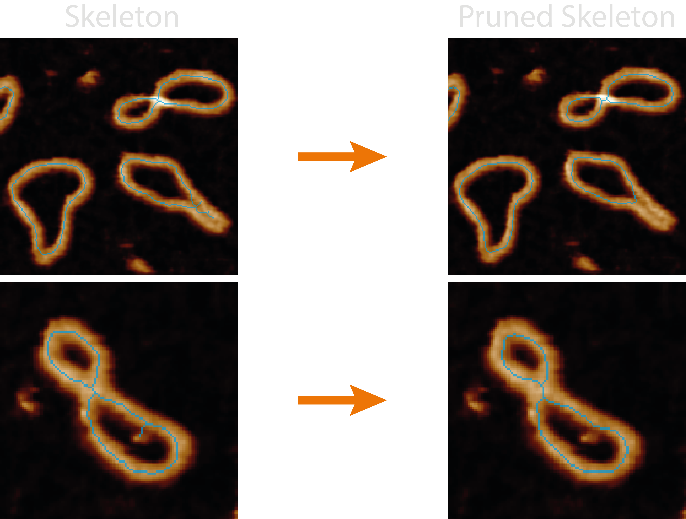
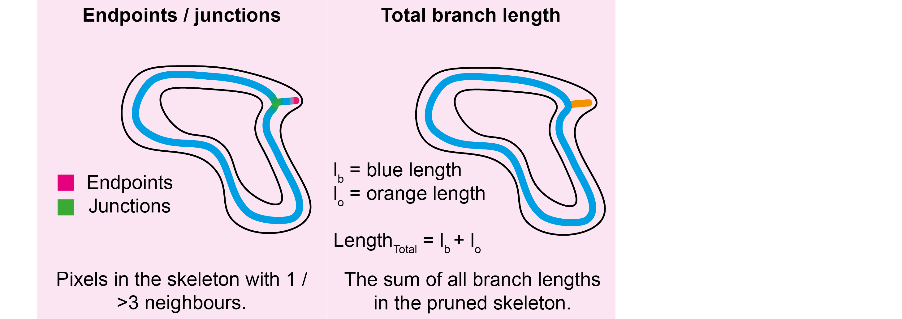
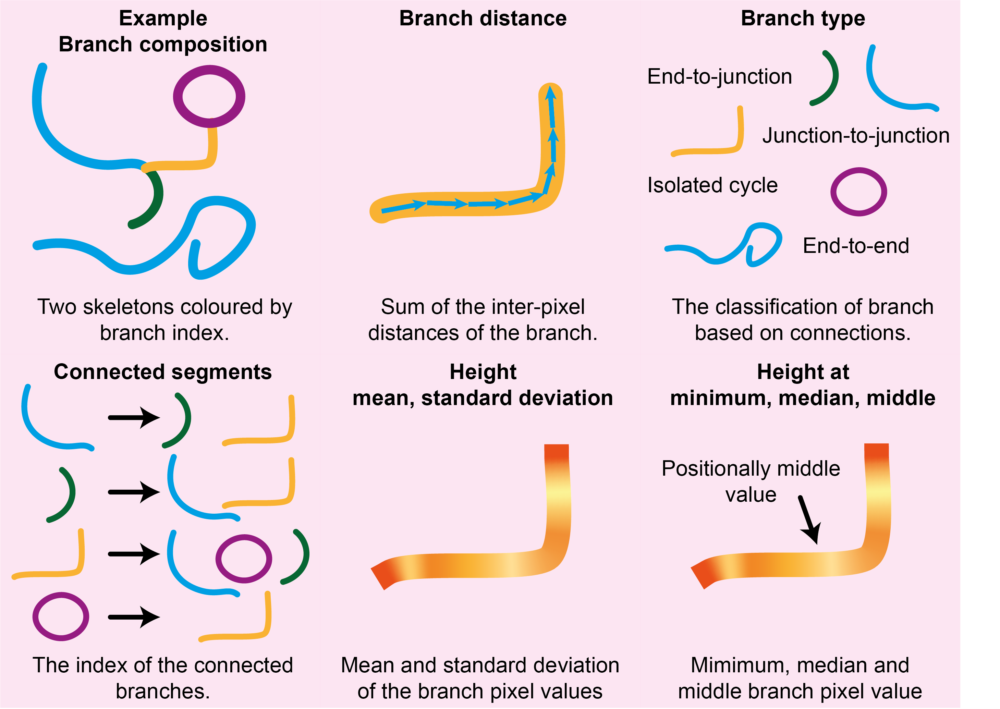
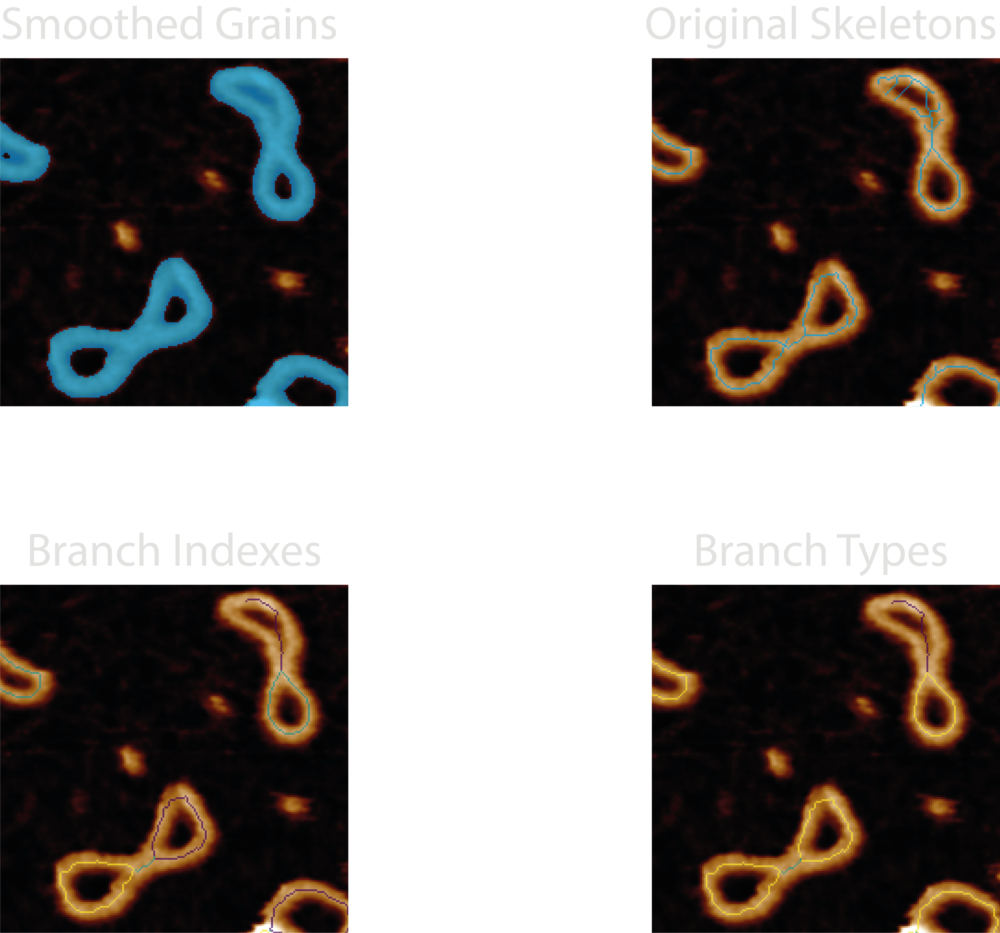

Disordered Tracing
This section gives an in-depth overview of the steps taken in the disordered tracing module.
At a Glance : Simple Representations
The disordered_tracing.py module handles all the functions associated with obtaining single-pixel wide, line
representations of masked objects.
The quality and likeness of the resultant pruned skeleton thus depends on the quality of the mask, the effectiveness of smoothing parameters, the method of skeletonisation, and the quality of automating the pruning of incorrect skeletal branches.

This module measures the number of junctions and endpoints for each pruned skeleton object and appends these columns to
the all_statistics.csv. In addition, the all_disordered_segment_statistics.csv file is produced which measures the
length, type, connections, and pixel value (typically height); minimum, middle, median, mean and standard deviation for
each skeleton segment between junctions using Skan. The branch types
are given by:
- 0: Endpoint-to-endpoint
- 1: Endpoint-to-junction
- 2: Junction-to-junction
- 3: Isolated cycle
Some useful points to bear in mind:
- Bad mask, bad skeleton - If the mask closes holes seen in the image, all skeletonisation methods will produce a single line for this region.
- No skeletons in image - The disordered trace
coreimage may not show the resultant skeletons if the plottingdpivalue is too low (varies based on image size). - Hard to remove branches - If there are still spurious branches to prune after modifying the
mask_smoothing_paramsandpruning_params, try increasing thefilters.gaussian_sizevalue to smooth the image the mask is created from. - Masked colours are relative - Any mask colours that may be produced by plots are relative to the mask values in that image as they will always span the masked colourmap, and will not compare well across images if the range of mask values differ.
Processing Steps
1. Smoothing the Mask
Generated masks can be quite jagged which causes a large increase in spurious skeletal branches which do not best represent the image. This can be resolved by first smoothing the incoming mask.

Smoothing uses either binary dilation (expanding the borders of the mask dilation_iterations times) or an otsu
threshold applied to a gaussian filtered mask (with a smoothing factor of gaussian_sigma). If both values are provided
an input in the configuration file, they will compete, and the winning result is the one with the smallest number of
added pixels.
The reason for the competition is an attempt to conserve mask topology i.e. any small holes it has which may become closed upon dilation / gaussian blurring. The dilation method seems to work best for larger masks where there are more mask pixels, and the gaussian smoothing better when there are small holes.
In addition, this smoothing step also tries to preserve mask topology by re-adding any holes back into the mask that lie
within the holearea_min_max threshold. This has the resulting effect of only smoothing the outer edge of the mask.
If required, the function can also take null values for both dilation_iteration and gaussian_sigma values to
return the original grain. This is useful for retaining the sample topology when the masking / segmentation is good
enough, for example when you use finely-trained deep learning models.
2. Skeletonisation
Skeletonisation is the process of reducing a binary image to a single-pixel wide representation. This can be done using
the algorithms provided by scikit-image
such as zhang (rule based + erosion), lee (connectivity preserving), medial_axis (pixels with >1 closest boundary
pixels), or topostats - a modification of Zhang's algorithm which uses the underlying height information to order and
then remove only a percentage of the pixels marked for removal on each skeletonisation iteration. The skeletonisation
methods are handled by the tracing/skeletonize.py module.

We have found that by including the height information into the skeletonisation process and removing the lowest
height_bias percent, we can bias the skeleton to lie on the DNA backbone and generate a better representation of the
molecule, especially at crossing points and regions where the mask is less accurate.

3. Pruning
Pruning is the act of removing spurious branches from a skeleton which does not follow the underlying masks' shape. To this end, TopoStats provides a variety of methods and parameters to help clean up the skeletons.

Pruning can be done by branch length (using the max_length configuration parameter) and / or the branch height (using
the height_threshold, method_values and method_outliers configuration parameters).
Length pruning is the simplest, iteratively comparing the length (in nm) of each branch containing an endpoint with the
max_length parameter. If it's length is below this value, it is deemed as a spurious branch and removed, along with
any junction pixels until a single-pixel skeleton remains.
Height pruning also iteratively compares the branches pixel values (height) to a height_threshold parameter, again,
any branch heights which are below this value are pruned. However, as there are multiple pixels in a branch, we provide
different methods to obtain a single branch height value for comparison i.e. method_values:
min- the minimum value of all the branch pixel values.median- the median value of all the branch pixel values.mid- the middle value (averaged if two) of the ordered branch pixels. This is particularly useful for pruning false bridges where the height dips in the middle of the branch.
Additionally, how these branch height values compare to the height_threshold is also considered i.e method_outliers:
abs- prunes branch values below the absolute value of theheight_threshold.mean_abs- prunes branch values below the whole skeleton mean pixel value - absolute threshold. This is useful for non-surface samples or periodic structures e.g. in DNA we expect the mean height to be around 2nm, but high resolution imaging may cause this to dip to 0.8nm (the depth of a major groove), so we'd want to prune branch heights below this.iqr- prunes branch values below 1.5x inter-quartile range (IQR) of all the branches. Height pruning cannot produce more than one skeleton and so avoids breaking up the skeleton into multiple parts.
Outputs
The <image>_<threshold>_disordered_trace image shows the pruned skeletons that are used to obtain the below metrics
and passed onto future processing stages.
For each grain, the following new columns are added to the grainstats.csv file:
| Column Name | Description | Data Type |
|---|---|---|
grain_endpoints |
The number of pixels designated as endpoints (only 1 neighbour) in the pruned skeleton. | integer |
grain_junctions |
The number of pixels designated as junctions (>2 neighbours) in the pruned skeleton. | integer |
total_branch_length |
The sum of all branch lengths in the pruned skeleton. | float |

Disordered Segment Statistics
An all_disordered_segment_statistics.csv file is produced for each image which measures the following metrics from
each segment in each pruned skeleton:
| Column Name | Description | Data Type |
|---|---|---|
image |
The image name being processed. | string |
threshold |
The direction of the grain threshold being applied. | string |
grain_number |
The number of the grain being processed in the image. | integer |
index |
The branch index. | integer |
branch-distance |
The distance (in nm) of the branch. | float |
branch-type |
Branch classification of endpoint-to-endpoint (0), endpoint-to-junction (1), junction-to-junction (2), isolated cycle (3). | integer |
connected_segments |
The index of the branch segments that this current branch is connected to via a junction point. | list |
mean-pixel-value |
The mean of the branch pixel values (height), in nm. | float |
stdev-pixel-value |
The standard deviation of the branch pixel values (height), in nm. | float |
min-value |
The minimum value of the branch pixel values (height), in nm. | float |
median-value |
The median value of the branch pixel values (height), in nm. | float |
mid-value |
The value of a pixel halfway along the ordered branch (height), in nm. | float |
basename |
The directory path containing the image. | string |

Diagnostic Images
Images produced by the plotting.image_set: all for this module are:
21-smoothed_grains- The smoothed mask, used to check that the image topology is retained (holes) before skeletonisation.22-original_skeletons- Skeletonised mask, used to ensure the skeletons follow the underlying structures. Used to check if the skeletonisation parameters are suitable.23-branch_indexes- An integer mask of the pruned skeleton with branch pixel values matching the index value in the data. Used to cross reference theall_disordered_segment_statistics.csvdata with an image. Using the default colourmap for this (viridris), darker (purple) colours are lower indexes, and brighter (yellow) colours are higher.24-branch_types- An integer mask of the pruned skeleton with branch pixel values matching thebranch-type(numbers and definitions in the "At a Glance" section). This can be used to count and check if the skeletonisation process correctly identifies the different branch types. Using the default colourmap for this (viridris), darker (purple) colours are lower indexes, and brighter (yellow) colours are higher.

Possible Uses
This module would lend itself to measuring branched structures and may aid the identification of particular regions by filtering-out segments based on their branch type.
We have used this module to identify and measure the length of reverse forks in stalled DNA replication intermediates as these structures should produce closed loops, however, the reverse forks can be identified as branches with endpoints and their metrics identified from the data. It has also been used as part of the pipeline to obtain ordered traces along topologically complex DNA molecules and topological classifications in our paper; Under or Over? Tracing Complex DNA Topologies with High Resolution Atomic Force Microscopy.